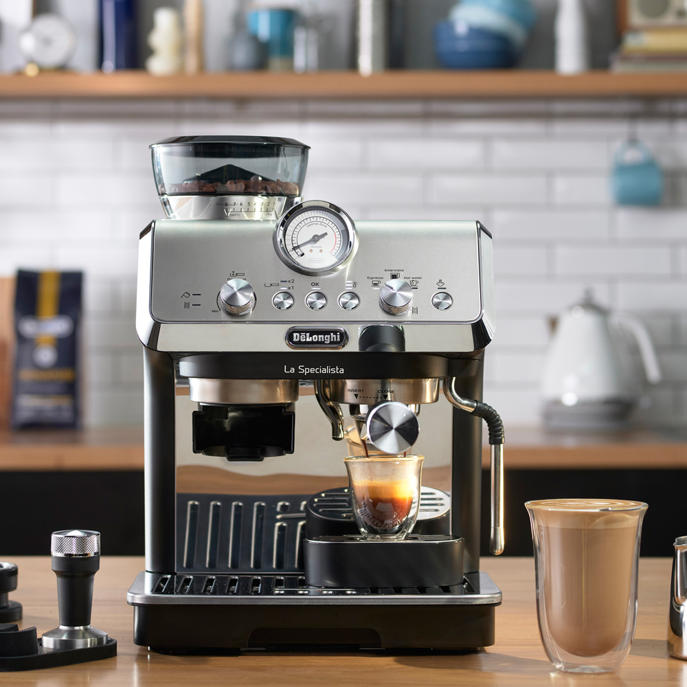

Need a coffee machine repair? MyFixer provides mobile coffee machine diagnostics and repair for homes, offices, restaurants, businesses and other suitable locations in Centurion, Pretoria, Johannesburg and surrounding areas.
We assist when a coffee machine is not heating, not brewing, not grinding, leaking water, producing weak coffee, showing a warning message, losing water flow, producing poor steam or failing to start. Our technicians inspect the machine to identify the likely cause before recommending the appropriate repair.
MyFixer operates as a mobile appliance repair service. Where practical, our technicians travel to your home, office or business to diagnose and repair the coffee machine. Some specialised repairs may require the machine to be taken to a suitable workshop.
Repair and fault diagnosis for home and commercial espresso machines, including heating, brewing, pressure, water flow and steam-related problems.
Diagnosis of brewing, grinder, water-flow, heating and dispensing problems on automatic bean-to-cup coffee machines.
Repairs for capsule machines experiencing water-flow, heating, pressure, leaking or electrical problems.
Service support for suitable commercial coffee machines used in offices, businesses and other working environments.
We diagnose coffee machines that are not heating correctly, including possible problems with boilers, heating elements, thermostats, temperature sensors and related components.
We investigate machines that fail to brew coffee or produce poor extraction, including possible water-flow, pressure, brewing and internal component problems.
We check pumps, water lines, valves and other components when water flow is weak, restricted or not working correctly.
We investigate coffee machine leaks caused by worn seals, O-rings, hoses, valves, connectors and other internal components.
We diagnose blocked grinders, worn burrs, inconsistent grinding and grinder motor problems where repair is practical.
We inspect steam wands and milk frothers affected by blockages, poor steam pressure, valves and other faults.
We diagnose power problems, control faults, warning messages and machines that fail to start or operate correctly.
We inspect coffee machines displaying warning messages, error codes or unusual operating behaviour to determine the likely cause of the fault.
Coffee machine servicing can involve checking the machine's heating, brewing, water flow, pump, grinder, steam and electrical functions. The exact inspection depends on the type of machine and the symptoms reported.
If your coffee machine is making unusual noises, producing weak coffee, dispensing too little water, leaking, failing to heat or showing an error message, the technician can assess the machine and determine the likely cause before recommending the next step.
MyFixer services a range of domestic and commercial coffee machine brands. Depending on the machine and fault, this includes DeLonghi, Jura, Nespresso, Saeco, Breville and Gaggia, as well as other makes and models.
We can assist with suitable automatic, bean-to-cup, espresso and capsule coffee machines. If you are unsure whether we can assist with your particular machine, contact us with the brand and model and details of the problem.
MyFixer provides mobile coffee machine repair and servicing across selected areas of Gauteng, including Centurion, Pretoria, Johannesburg, Midrand, Sandton, Randburg, Roodepoort and Fourways, subject to service availability.
Our mobile technicians travel to homes, offices and businesses where the coffee machine and fault are suitable for on-site service. Contact us with your location, coffee machine brand and model, and a description of the problem so we can advise on the next step.
MyFixer repairs common coffee machine faults including machines that do not heat, do not brew, have poor water flow, weak pump pressure, leaks, grinder problems, steam wand and milk frother faults, electrical problems, warning messages and other operating issues.
Yes. MyFixer can diagnose coffee machines that are not heating, not brewing or have restricted water flow. Possible causes can include heating elements, boilers, thermostats, pumps, valves, water lines, sensors or electrical and control components.
We service popular coffee machine brands including DeLonghi, Jura, Nespresso, Saeco, Breville and Gaggia, as well as other domestic and commercial coffee machine brands, depending on the machine and fault.
Yes. MyFixer provides mobile coffee machine diagnostics and repair in Centurion, Pretoria, Johannesburg and surrounding areas. Our technicians can travel to homes, offices and businesses where on-site repair is practical and suitable for the machine and fault.